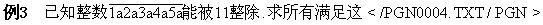
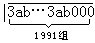
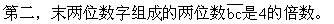

二、例题
解：∵45=5×9，
∴根据整除“性质2”可知
∴y可取0或5。
∴满足条件的六位数是519930或919935。
例2 李老师为学校一共买了28支价格相同的钢笔，共付人民币9□.2□元.已知□处数字相同，请问每支钢笔多少元？
解：∵9□.2□元=9□2□分
28＝4×7，
∴根据整除“性质2”可知
4和7均能整除9□2□。
4｜2□可知□处能填0或4或8。
因为7  9020，7 9424，所以□处不能填0和4；
9020，7 9424，所以□处不能填0和4；
因为7｜9828，所叫□处应该填8。
又∵9828分=98.28元
98.28÷28＝3.51（元）
答：每支钢笔3.51元。

个条件的整数。
∴根据能被11整除的数的特征可知：
1+2+3+4+5的和与5a之差应是11的倍数，
即11｜（15—5a）.或11｜（5a—15）。
但是15—5a=5（3—a），5a—15=5（a—3），又（5，11）=1，因此111（3—a）或11｜（a—3）。
又∵a是数位上的数字。
∴a只能取0～9。
所以只有a=3才能满足11｜（3—a）或11｜（a—3），
即当a=3时，11｜15—5a。
符合题意的整数只有1323334353。
互不相同），且它能被11整除，你能找到一个符合条件的整数吗？
解：∵91=7×13，且（7，13）＝1。
根据一个数能被7或13整除的特征可知：
因为（7，10）=1，（13，10）＝1，所以7，13 也就是7，13，因此，用一次性质（特征），就去掉了两组；反复使用性质996次，最后转化成：原数能被7以及13整除，当且仅当能被7以及13整除
又∵91的倍数中小于1000的只有91×4=364的百位数字是3，∴=364
例5 在865后面补上三个数字，组成一个六位数，使它能分别被3、4、5整除，且使这个数值尽可能的小。
5整除，所以它应满足以下三个条件：
第一，数字和（8+6＋5+a+b+c）是3的倍数。

第三，末位数字c是0或5。
又∵能被4整除的数的个位数不可能是5。
∴c只能取O.因而b只能取自O，2，4，6，8中之一。
∴a＋b除以3余2。
为满足题意“数值尽可能小”，只需取a=0，b=2。
∴要求的六位数是865020。
分析 ∵26=2×13，
∴y可能取0、2、4、5、6、8。

当y＝0时，

＝7×13x+9x+13＋6
∴根据整除“性质1”，有13｜9x+6，
经试验可知只有当x＝8时，13｜9x＋6，
∴当y=0时，符合题意的六位数是819910。
所以13整除9x＋6—2，
即13｜9x+4。
经试验可知只有当x＝1时，13｜9x+4。
∴当y＝2时，符合题意的六位数是119912。
同理，当y＝4时，13｜9x＋6-4，
即13｜9x+2，
经试验可知当x＝7时，13｜9x+2。
∴当y=4时，符合题意的六位数是719914。
同理，当y＝6时，13｜9x＋6—6。
即13｜9x.
∴当y=6时，找不到符合题意的六位数。
同理，当y＝8时，13｜9x+6-8，
即13｜9x-2。
经试验只有当x＝6时，13｜9x-2。
∴当y=8时，符合题意的六位数是619918。
答：满足本题条件的六位数共有819910、119912、719914和619918四个。